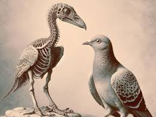
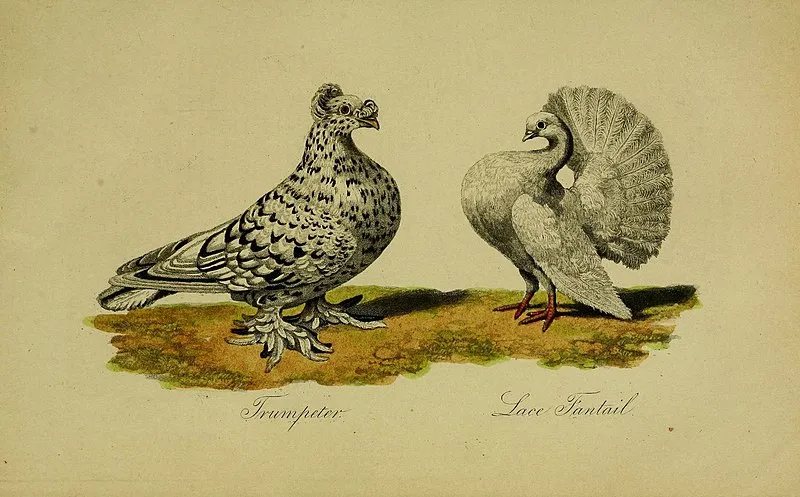
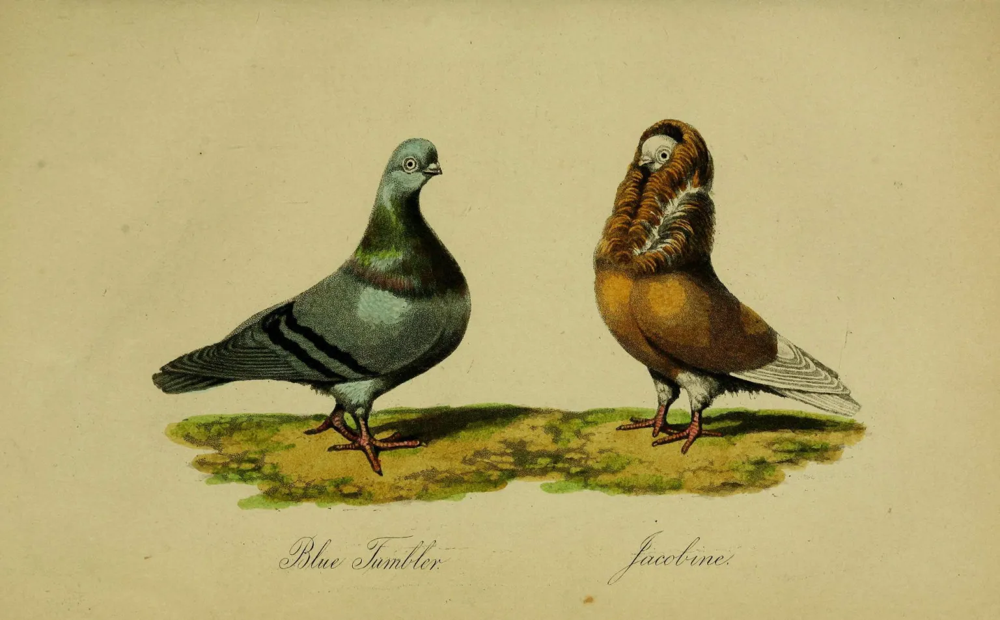
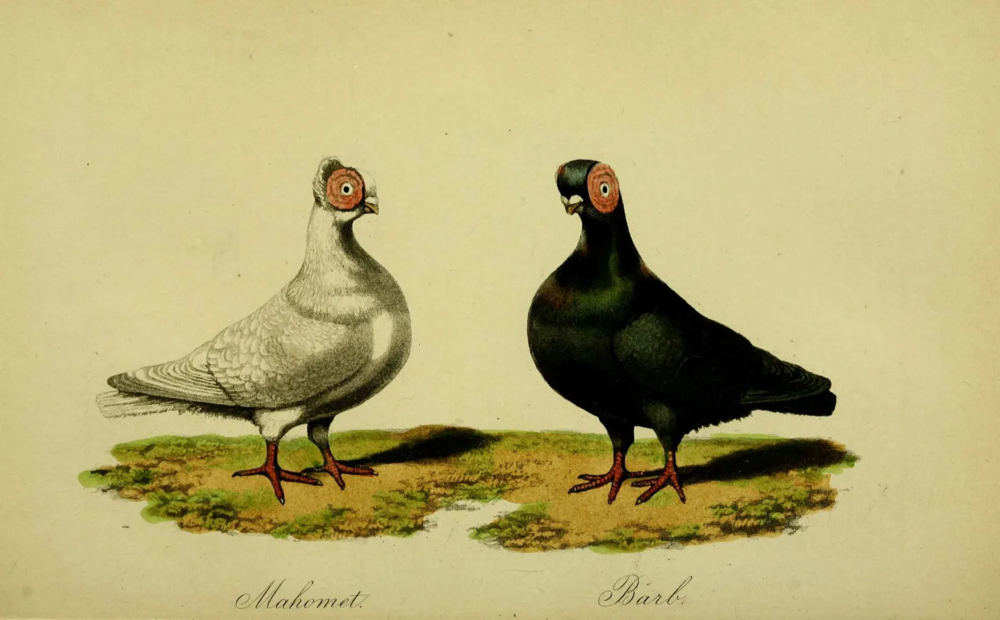

Despite the long history of pigeons, little is known about the specifics of their initial domestication. Which subspecies of C. livia was the progenitor of domestics, exactly when, how many times, where and how they were domesticated, and how they spread, remains unknown. Their fragile bones and similarity to wild birds make the fossil record a poor tool for their study. Thus most of what is known comes from written accounts, which almost certainly do not cover the first stages of domestication.
The earliest recorded mention of pigeons comes from Mesopotamia some 5,000 years ago. Pigeon Valley in Cappadocia has rock formations that were carved into ancient dovecotes. Ancient Egyptians kept vast quantities of them, and would sacrifice tens of thousands at a time for ritual purposes. Akbar the Great traveled with a coterie of thousands of pigeons
Eventually, people realized that they could take advantage of the birds’ navigational skills, too. Pigeons that are captured, moved, and released will fly back to their coops, even if they’re hundreds of miles away from home. Called a “homing instinct,” this behavior has allowed humans to use pigeons to orient sailors towards land and to deliver messages over great distances. The use of messenger pigeons continued even until the modern era, where the birds were used in WWI and WWII to send messages from the front lines and even save stranded troops. Eventually, chickens became the avian meat of choice in much of the world, and breeding domestic pigeons transitioned from food production to a hobby activity. Pigeon enthusiasts created hundreds of different breeds, with fanciful names — the Arabian Trumpeter, Fairy Swallow, Danish Jacobin — with plumage and colors to match. Charles Darwin, studied and bred domestic pigeons for years, and — although the Galapagos finches hog all the credit — the intricacies of pigeon breeding helped inform Darwin’s ideas on evolution.
  